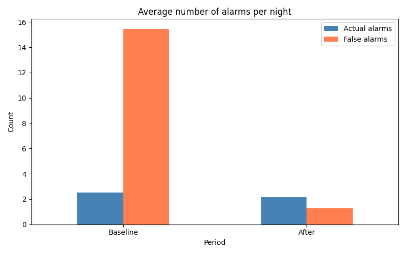

Larmanalys
En BI-analys av falska larm på ett äldreboende. Resultatet visar på drygt 92 % färre störande larm — och en tydlig beskrivning av vad som sparar både tid och oro för personalen.
Se projektetDataanalys, BI, SQL, Power BI, maskininlärning och AI-agenter
Jag gillar att rensa oreda, hitta mönster och förklara vad datan egentligen betyder. Här är ett urval av projekt jag har byggt under min utbildning och på egen hand.

En BI-analys av falska larm på ett äldreboende. Resultatet visar på drygt 92 % färre störande larm — och en tydlig beskrivning av vad som sparar både tid och oro för personalen.
Se projektetEtt experiment för att lära mig att orkestrera AI-agenter i en data-pipeline. Agenterna laddar data, bygger en stjärnmodell, analyserar, exporterar och dokumenterar — allt från CSV till BI-klar output.
Se projektetEn avslutande ML-notebook med linjär och logistisk regression, decision trees, random forest, k-means-klustring, PCA och SVM — tränad på flera olika dataset.
Se projektetEn hel pipeline från råa CSV-filer via Python-rengöring och dimensions-/faktatabeller till en Power BI-rapport. Just nu är rapportsidan under omarbetning innan den publiceras.
Se projektetERD och SQL-uppgifter från utbildningen, inklusive grupparbete med datamodellering och relationer.
Se projektetJag läser BI-utvecklare vid Nackademin (BI24) och söker roller där jag får jobba med att göra data begripligt — oavsett om det handlar om analys, visualisering, SQL eller att bygga smartare arbetsflöden.
Starkast är jag när jag får koppla ihop tekniken med en verklig nytta: vad betyder den här siffran, och vad ska vi göra åt den?
Förfrågningar, frågor eller bara en kaffe? Hör av dig via LinkedIn eller mejl.